library(broom)Chapter 11: Regression
Learning Objectives
- Simple Linear Regression
- Chapter 11.1–11.6, 11.9, 11.10 of Rosner
Motivation
- The simple linear model is not sexy.
- But the most commonly used methods in Statistics are either specific applications of it or are generalizations of it.
- Understanding it well will help you better understand methods taught in other classes.
- We teach Linear Regression in STAT 415/615 (the most important course we teach). So these notes are just meant to give you a couple tools that you can build on in that course.
Broom
For the most popular model output (t-tests, linear models, generalized linear models), the
broompackage provides three functions that aid in data analysis.tidy(): Provides summary information of the model (such as parameter estimates and \(p\)-values) in a tidy format. We used this last class.augment(): Creates data derived from the model and adds it to the original data, such as residuals and fits. It formats this augmented data in a tidy format.glance(): Prints a single row summary of the model fit.
These three functions are very useful and incorporate well with the tidyverse.
You’ve seen me use
tidy()many times in this class. Below, we will see examples of usingaugment()andglance().
Estradiol vs Birthweight
For this lesson, we will use the study from Greene Jr and Touchstone (1963) exploring the association between the estradiol level in pregnant women and birthweight.
library(tidyverse) estriol <- read_csv("../data/estriol.csv") glimpse(estriol)Rows: 31 Columns: 3 $ id <dbl> 1, 2, 3, 4, 5, 6, 7, 8, 9, 10, 11, 12, 13, 14, 15, 16, 17,… $ estriol <dbl> 7, 9, 9, 12, 14, 16, 16, 14, 16, 16, 17, 19, 21, 24, 15, 1… $ birthweight <dbl> 25, 25, 25, 27, 27, 27, 24, 30, 30, 31, 30, 31, 30, 28, 32…estriolis measured in milligrams per 24 hours.birthweightis in units of 100 grams.To begin, we’ll look at the association between these variables
ggplot(estriol, aes(x = estriol, birthweight)) + geom_point() + xlab("Estriol (mg/24hr)") + ylab("Birthweight (g/100)")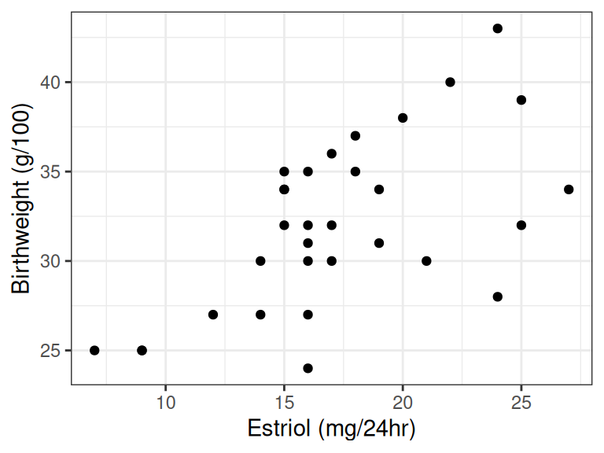
It seems that estriol is positively associated with birthweight.
It seems that the data approximately fall on a line.
Line Review
Every line may be represented by a formula of the form \[ Y = \beta_0 + \beta_1 X \]
\(Y\) = response variable on \(y\)-axis
\(X\) = explanatory variable on the \(x\)-axis
\(\beta_1\) = slope (rise over run)
- How much larger is \(Y\) when \(X\) is 1 unit larger.
- If \(\beta_1 < 0\) then the line slopes downward.
- If \(\beta_1 > 0\) then the line slopes upward.
- If \(\beta_1 = 0\) then the line is horizontal.
\(\beta_0\) = \(y\)-intercept (the value of the line at \(X = 0\))
You can represent any line in terms of its slope and its \(y\)-intercept:
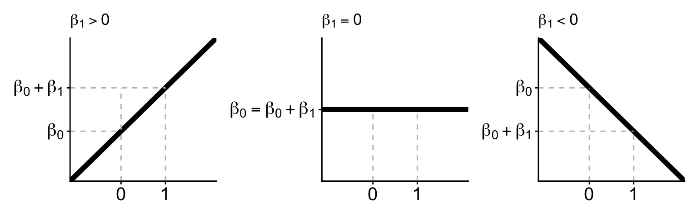
Suppose we consider the line defined by the following equation: \[ Y = 2 + 4X \]
- What is the value of \(Y\) at \(X = 3\)?
- What is the value of \(Y\) at \(X = 4\)?
- What is the difference in \(Y\) values at \(X = 3\) versus \(X = 4\)?
- What is the value of \(Y\) at \(X = 0\)?
- 2 + 4 * 3 = 14
- 2 + 4 * 4 = 18
- You don’t need to compare (1) and (2). Just look at the slope.
- This is the y-intercept.
Simple Linear Regression Model
A line does not exactly fit the estriol dataset. But a line does approximate the estriol data.
Model: Response variable = line + noise. \[ Y_i = \beta_0 + \beta_1 X_i + \epsilon_i \]
We typically assume that the noise (\(\epsilon_i\)’s) for each individual has mean 0 and some variance \(\sigma^2\). We estimate \(\sigma^2\).
Linear Model in a Nutshell
Given \(X_i\), mean of \(Y_i\) is \(\beta_0 + \beta_1 X_i\). Points vary about this mean.
There exists a regression line describing the relationship between \(X\) and \(E[Y|X]\):
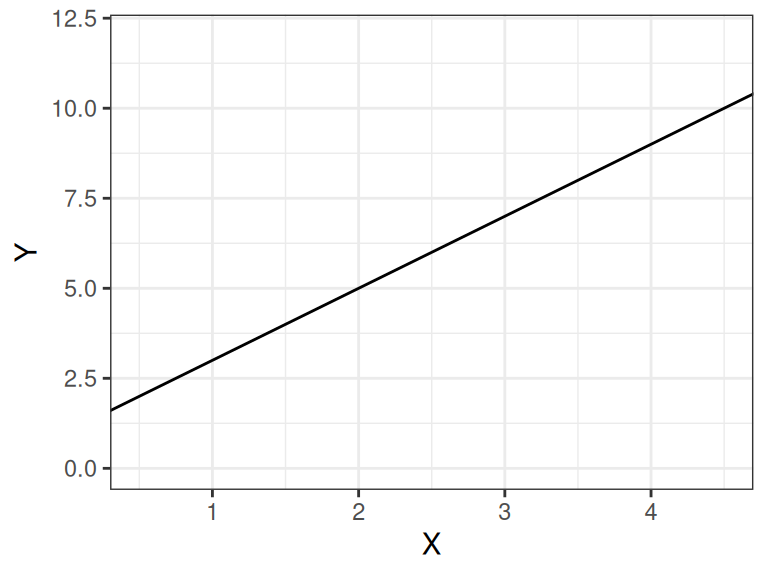
The distribution of \(Y\) is conditional on the value of \(X\)
Our \(Y\) values are sampled from this distribution
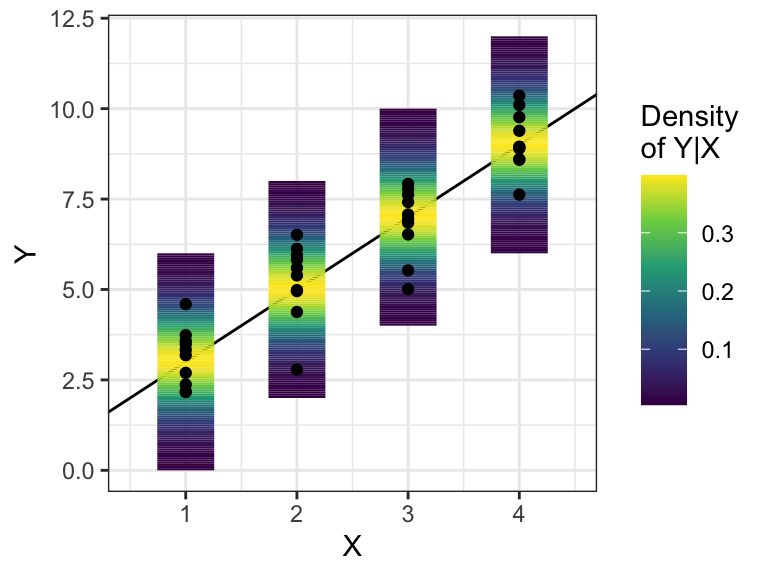
But in real-life, we only see the points
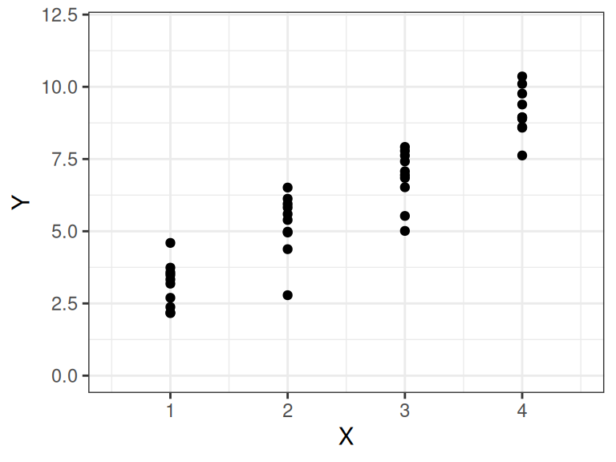
Some intuition:
- The distribution of \(Y\) is conditional on the value of \(X\).
- The distribution of \(Y\) is assumed to have the same variance, \(\sigma^2\) for all possible values of \(X\).
- This last one is a considerable assumption.
Interpretation:
- Randomized Experiment: A 1 unit increase in \(x\) results in a \(\beta_1\) unit increase in \(y\).
- Observational Study: Individuals that differ only in 1 unit of \(x\) are expected to differ by \(\beta_1\) units of \(y\).
What is the interpretation of \(\beta_0\)?
If 0 is in the range of the data, then it can be interpreted as the expected value of \(Y\) at \(X = 0\). But, typically, it has no interpretation except the \(y\)-intercept of the regression line.
Estimating Coefficients
How do we estimate \(\beta_0\) and \(\beta_1\)?
- \(\beta_0\) and \(\beta_1\) are parameters
- We want to estimate them from our sample
- Idea: Draw a line through the cloud of points and calculate the slope and intercept of that line?
- Problem: Subjective
- Another idea: Minimize residuals (sum of squared residuals).
Ordinary Least Squares
- Residuals: \(\hat{\epsilon}_i = Y_{i} - (\hat{\beta}_0 + \hat{\beta}_1X_i)\)
- Sum of squared residuals: \(\hat{\epsilon}_1^2 + \hat{\epsilon}_2^2 + \cdots + \hat{\epsilon}_n^2\)
- Find \(\hat{\beta}_0\) and \(\hat{\beta}_1\) that have small sum of squared residuals.
- The obtained estimates, \(\hat{\beta}_0\) and \(\hat{\beta}_1\), are called the ordinary least squares (OLS) estimates.
Large sum of squares of three points
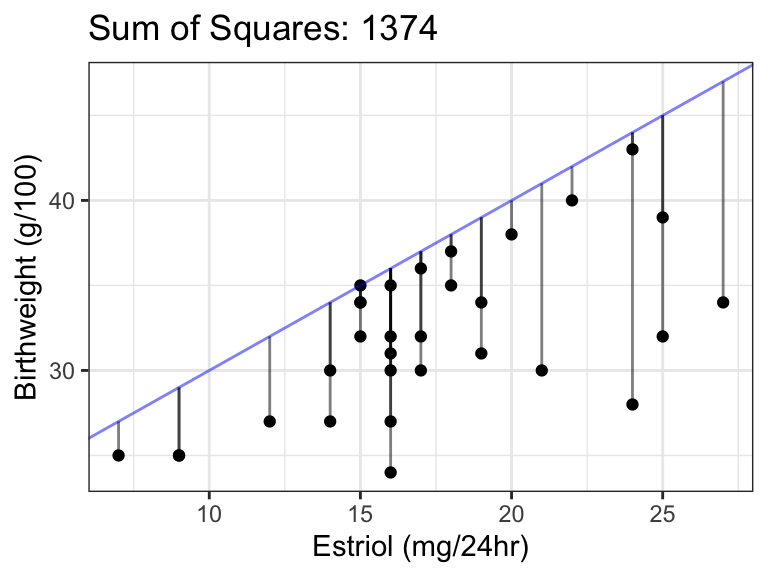
Small sum of squares of three points
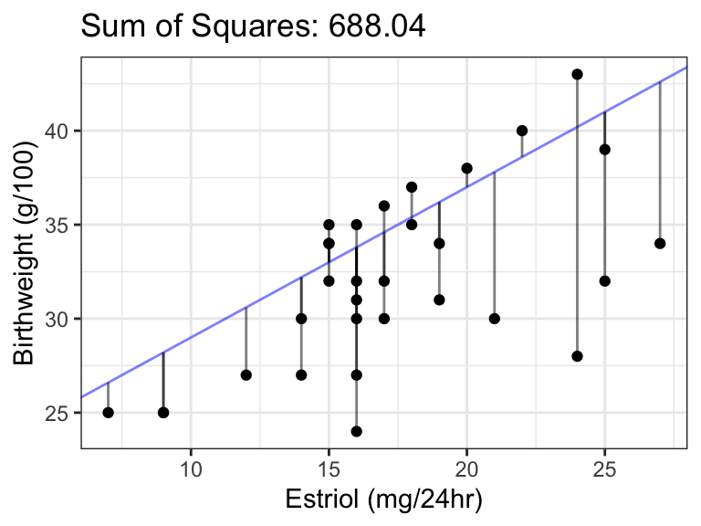
Bad Fit:
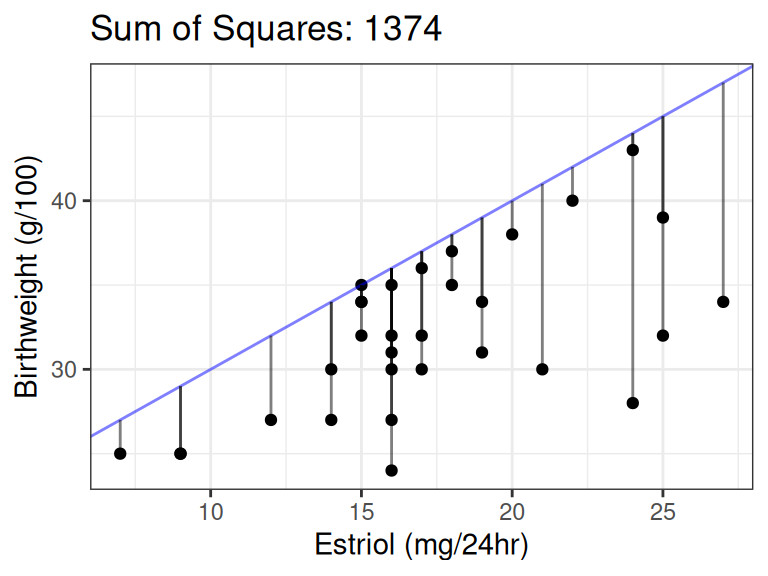
Better Fit:
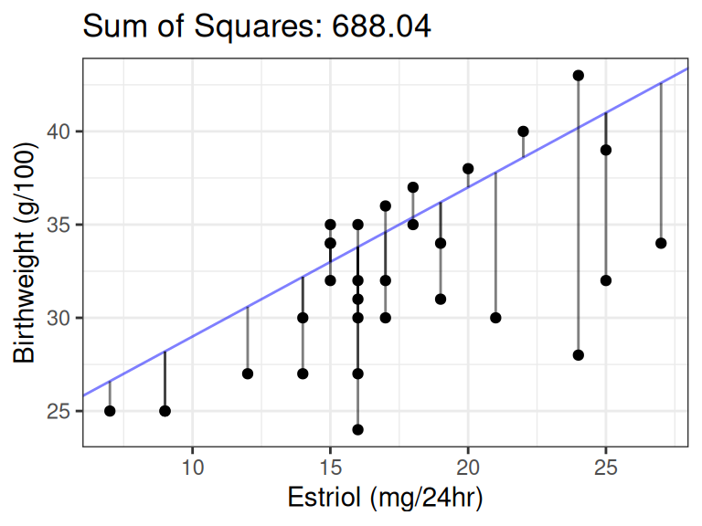
Best Fit (OLS Fit):
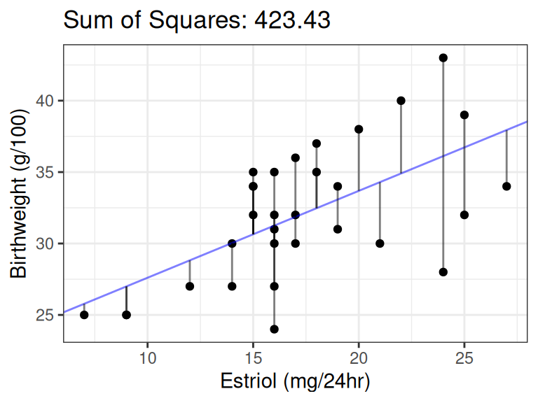
How to find OLS fits in R:
Make sure you have the explanatory variables in the format you want (e.g., after variable transformation)
Use
lm()lmout <- lm(birthweight ~ estriol, data = estriol) lmtide <- tidy(lmout) select(lmtide, term, estimate)# A tibble: 2 × 2 term estimate <chr> <dbl> 1 (Intercept) 21.5 2 estriol 0.608
The first argument in
lm()is a formula, where the response variable is to the left of the tilde and the explanatory variable is to the right of the tilde.response ~ explanatoryThis formula says that
lm()should find the OLS estimates of the following model:response = \(\beta_0\) + \(\beta_1\)explanatory + noise
The
dataargument tellslm()where to find the response and explanatory variables.We often put a “hat” over the coefficient names to denote that they are estimates:
- \(\hat{\beta}_0\) = 21.5.
- \(\hat{\beta}_1\) = 0.6.
Thus, the estimated line is:
- \(E[Y_i]\) = 21.5 + 0.6\(X_i\).
Forced expiratory volume (FEV) is commonly used to assess lung function. To determine whether an individual’s pulmonary function is abnormal, reference values for FEV in healthy individuals must first be established. A challenge in this process is that FEV varies with both age and height. For this analysis, we focus on boys aged 10 to 15 and propose a regression model: FEV = α + β (height) + e. Data were collected on FEV and height for 655 boys in this age range living in Tecumseh, Michigan. The data frame below gives the average FEV (in liters) for twelve height categories, each spanning 4 cm. Obtain estimates of this linear model. What is the fitted regression line? Interpret the coefficients.
fev <- tribble(
~height, ~fev,
134, 1.7,
138, 1.9,
142, 2.0,
146, 2.1,
150, 2.2,
154, 2.5,
158, 2.7,
162, 3.0,
166, 3.1,
170, 3.4,
174, 3.8,
178, 3.9
)lmout_fev <- lm(fev ~ height, data = fev)
tidy(lmout_fev)# A tibble: 2 × 5
term estimate std.error statistic p.value
<chr> <dbl> <dbl> <dbl> <dbl>
1 (Intercept) -5.31 0.395 -13.5 0.0000000982
2 height 0.0513 0.00252 20.4 0.00000000180We have \(\hat{\beta}_0 = -5.31288\) and \(\hat{\beta}_1 = 0.05131\). The fitted regression line is \[ y = -5.31288 + 0.05131x \] We only interpret \(\hat{\beta}_1\) since 0 is not in the range of the data. Folks who are 1 cm taller have an FEV 0.05 liters larger on average. You would get no points on an exam if you used the words “increase” or “change”.
Estimating Variance
We assume that the variance of \(Y_i\) is the same for each \(X_i\).
Call this variance \(\sigma^2\).
We estimate it by the variability in the residuals.
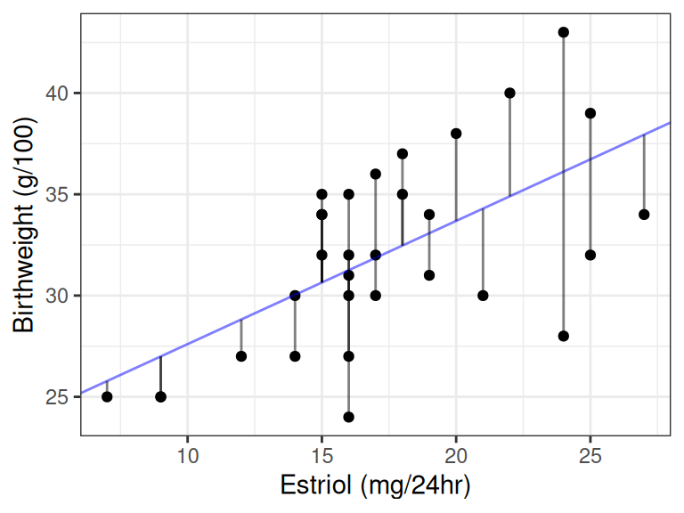
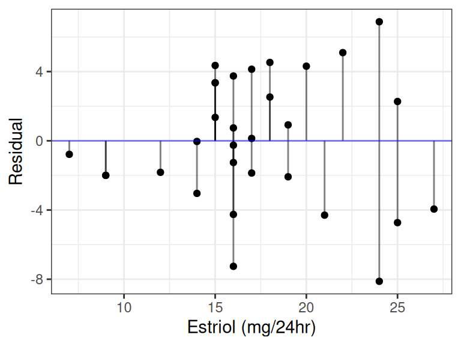
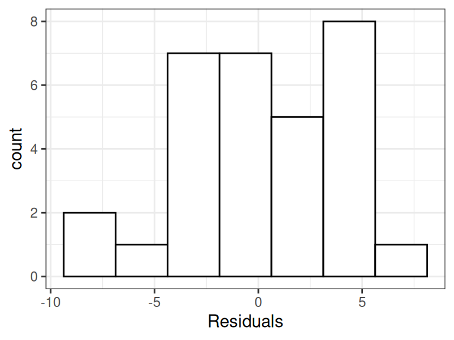
The variance of residuals is the estimated variance in the data. This is a general technique.
- Technical note: people adjust for the number of parameters in a model when calculating the variance, so they no-longer divide by “n - 1”.
In R, use the broom function
glance()function to get the estimated standard deviation. It’s the value in thesigmacolumn.glance(lmout) %>% select(sigma)# A tibble: 1 × 1 sigma <dbl> 1 3.82Estimating the variance/standard deviation is important because it is a component in the standard error of \(\hat{\beta}_1\) and \(\hat{\beta}_0\). These standard errors are output by
tidy().tidy(lmout) %>% select(term, std.error)# A tibble: 2 × 2 term std.error <chr> <dbl> 1 (Intercept) 2.62 2 estriol 0.147The variance is also used when calculating prediction intervals.
Hypothesis Testing
- The sign of \(\beta_1\) denotes different types of relationships between the two quantitative variables:
- \(\beta_1 = 0\): The two quantitative variables are not linearly associated.
- \(\beta_1 > 0\): The two quantitative variables are positively associated.
- \(\beta_1 < 0\): The two quantitative variables are negatively associated.
- Hypothesis Testing:
- We are often interested in testing if a relationship exists:
- Two possibilities:
- Alternative Hypothesis: \(\beta_1 \neq 0\).
- Null Hypothesis: \(\beta_1 = 0\).
- Strategy: We calculate the probability of the data assuming possibility 2 (called a \(p\)-value). If this probability is low, we conclude possibility 1. If the this probability is high, we don’t conclude anything.
- Graphic: 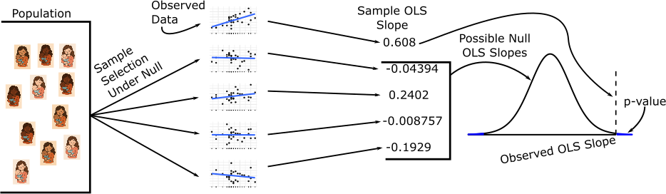
The sampling distribution of \(\hat{\beta}_1\) comes from statistical theory. The \(t\)-statistic is \(\hat{\beta}_1 / SE(\hat{\beta}_1)\). It has a \(t\)-distribution with \(n-2\) degrees of freedom.
- \(SE(\hat{\beta}_1)\): Estimated standard deviation of the sampling distribution of \(\hat{\beta}_1\).
Which is higher? Determine if (i) or (ii) is higher or if they are equal. Explain your reasoning. For a regression line, the uncertainty associated with the slope estimate, \(\hat{\beta}_1\) , is higher when
- there is a lot of scatter around the regression line or
- there is very little scatter around the regression line
(i). If there is a lot of scatter, then it is hard to pin-point the mean relationship. This can be formalized by looking at the contribution of the sample size in the standard error formula for \(\hat{\beta}_1\).
The bac dataset from Graham et al. (2003) examines sixteen student volunteers at Ohio State University who each drank a randomly assigned number of cans of beer. They then measured their blood alchol content. You can load these data into R via
bac <- tribble(
~beers, ~bac,
5, 0.1,
2, 0.03,
9, 0.19,
8, 0.12,
3, 0.04,
7, 0.095,
3, 0.07,
5, 0.06,
3, 0.02,
5, 0.05,
4, 0.07,
6, 0.1,
5, 0.085,
7, 0.09,
1, 0.01,
4, 0.05) Create an appropriate plot to visualize the association between the number of beers and the BAC.
Does the relationship appear positive or negative?
Write out equation of the OLS line.
Do we have evidence that the number of beers is associated with BAC? Formally justify.
Interpret the coefficient estimates.
What happens to the standard errors of the estimates when we force the intercept to be 0? Why? You can force the intercept to be 0 by subtracting
1on the right-hand-side of the formula inlm().
This is how you make the plot:
ggplot(bac, aes(x = beers, y = bac)) + geom_point()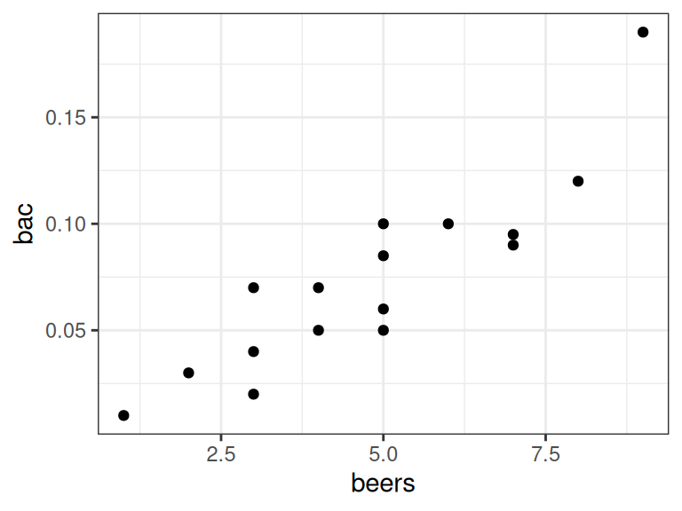
Positive. It points up.
You fit the linear model like this:
lmout_bac <- lm(bac ~ beers, data = bac) tdat <- tidy(lmout_bac, conf.int = TRUE) beta0hat <- tdat$estimate[1] beta1hat <- tdat$estimate[2]The estimated regression line is this: \[ y = -0.0127 + 0.01796 x \]
Yes, the \(p\)-value is 2.969e-06, which provides strong evidence against the null that the two variables are not linearly associated.
Every beer a person drinks is expected to increase their blood alcohol content by 0.018. I use causal language here because this was a randomized experiment.
We fit the linear model by forcing the intercept to be 0 via this code:
lmout_bac2 <- lm(bac ~ beers - 1, data = bac) tdat2 <- tidy(lmout_bac2, conf.int = TRUE) tdat$std.error[2][1] 0.002402tdat2$std.error[1] 0.0009715
The standard error shrinks. That’s because we are having to estimate one less parameter and so we have degrees of freedom.
ANOVA approach to Testing
There is an alternative way to conduct hypothesis testing in the linear model, through ANOVA (analysis of variances).
In simple linear regression, this ANOVA approach will be equivalent to the t-based approach above. But it generalizes to more complicated scenarios for multiple linear regression.
Tip
Analysis of variance has nothing to do with sample variances. It is about testing means. The “variance” should be thought of as variation attributible to different models.
We need some definitions:
Fits
The estimated value of \(y_i\) at a given \(x_i\), denoted \(\hat{y}_i\). In the simple linear regression model, this is \[ \hat{y}_i = \hat{\beta}_0 + \hat{\beta}_1x_i \]
Residuals
The deviation of the observed value of \(y_i\) from the fitted value \(\hat{y}_i\). \[ e_i = y_i - \hat{y}_i \]
- ANOVA is about partitioning the variation of \(y_i\) from \(\bar{y}\) into components that are explained by the predictors and components that are not explained by the predictors.
Total Sum of Squares
The total variation of the response variable \(y\). This is the amount of variation not explained by \(\bar{y}\) \[ \text{SSE(R)} = \sum_{i=1}^n (y_i - \bar{y})^2 \] This looks like the variance of \(Y\) without the \(\frac{1}{n-1}\) in front.

Residual Sum of Squares
The variation about the regression line. This is the amount of variation not explained by the regression line \[ \text{SSE(F)} = \sum_{i=1}^n(y_i - \hat{y}_i)^2 = \sum_{i=1}^ne_i^2 \]

Regression Sum of Squares
The variation between the regression line and \(\bar{y}\). This is the amount of variation explained by the regression line that is not explained by \(\bar{y}\). \[ \text{SSR} = \sum_{i=1}^n (\hat{y}_i - \bar{y})^2 \]

- The total sum of squares can be decomposed into the regression and residual sums of squares.
ANOVA Decomposition
- SSE(R) = SSR + SSE(F)
- Total SS = Regression SS + Residual SS
\[ \sum_{i=1}^n (y_i - \bar{y})^2 = \sum_{i=1}^n (\hat{y}_i - \bar{y})^2 + \sum_{i=1}^n(y_i - \hat{y}_i)^2 \]
- If the regression sum of squares is much larger than the residual sum of squares, then a large proportion of the variation not explained by \(\bar{y}\) can be explained by the regression line.
- This would provide evidence that there is a linear relationship between \(x\) and \(y\).
- The is the basis of the \(F\)-test
- Each sum of squares is associated with a degrees of freedom
Degrees of Freedom
Intuitively (not formally), how many independent pieces of information do we have?
- For SSE(F)
- \(\text{df}_F = n - 2\) = sample size - #parameters (\(\beta_0\) and \(\beta_1\))
- For SSE(R)
- \(\text{df}_R = n - 1\) = sample size - #parameters (\(\beta_0\))
- For SSR
- \(\text{df}_{\text{reg}} = \text{df}_R - \text{df}_F = 1\) = difference in number of parameters between the two models
\(F\)-test for Simple Linear Regression
\(H_0\): Reduced Model: \(Y_i = \beta_0 + \epsilon_i\) where \(\epsilon_i \sim N(0, \sigma^2)\)
\(H_1\): Full Model: \(Y_i = \beta_0 + \beta_1X_i + \epsilon_i\) where \(\epsilon_i \sim N(0, \sigma^2)\)
Calculate the test-statistic: \[ F^* = \frac{\text{SSR} / \text{df}_{\text{reg}}}{\text{SSE(F)} / \text{df}_F} = \frac{[\text{SSE(R)} - SSE(F)] / (\text{df}_{R} - \text{df}_F)}{\text{SSE(F)} / \text{df}_F} \]
Larger values of \(F^*\) mean that the regression line picks up more variation and provides evidence against \(H_0\).
If \(H_0\) is true, then \(F^* \sim F_{\text{df}_R - \text{df}_F, \text{df}_F}\).
- For SLR \(\text{df}_R - \text{df}_F = 1\) and \(\text{df}_F = n-2\)
The \(p\)-value is the probability that \(F > F^*\) given \(F \sim F_{\text{df}_R - \text{df}_F, \text{df}_F}\).
r 1 - pf(q = fstar, df1 = 1, df2 = n - 2)

In R, to run the F-test, take the output of
lm()and feed it intoanova().lm(birthweight ~ estriol, data = estriol) |> anova() |> tidy()# A tibble: 2 × 6 term df sumsq meansq statistic p.value <chr> <int> <dbl> <dbl> <dbl> <dbl> 1 estriol 1 251. 251. 17.2 0.000271 2 Residuals 29 423. 14.6 NA NAWhat is returned above is called an ANOVA table with the following elements
| df | ss | ms | statistic | \(p\)-value | |
|---|---|---|---|---|---|
| Regression | \(\text{df}_R - \text{df}_F\) | SSE(R) - SSE(F) | [SSE(R) - SSE(F)]/(df\(_R\) - df\(_F\)) | \(F^*\) | \(p\)-value |
| Error | \(\text{df}_F\) | SSE(F) | SSE(F) / df\(_F\) | ||
| Total | \(\text{df}_R\) | SSE(R) | SSE(R) / df\(_R\) |
- Because of the decomposition of sums of squares, folks often report the strength of the linear association via the coefficient of determination.
Coefficient of Determination
\[ R^2 = 1 - \frac{\text{SSE(R)}}{\text{SSE(F)}} = \frac{\text{Regression SS}}{\text{Total SS}} \]
- \(R^2\) is the proportion of variance in \(Y\) that is explained by the regression, or 1 minus the proportion of variance in \(Y\) not explained by the regression line.
- \(R^2 = 1\): All points lie exactly on the regression line.
- \(R^2 = 0\): Regression line is equal to \(y = \bar{y}\) (a horizontal line).
Important
\(R^2\) tells you NOTHING about the appropriateness of the model. Given the model is true, it tells you how much variation in a response a predictor explains.
E.g., the model might be wrong (because of a curvilinear relationship) but the \(R^2\) can still be high.
E.g., the model might be correct (because a linear relationship is fine) but the \(R^2\) can be 0 because the linear relationship is not strong.
From the FEV data, create an ANOVA table.
lm(fev ~ height, data = fev) |>
anova() |>
tidy()# A tibble: 2 × 6
term df sumsq meansq statistic p.value
<chr> <int> <dbl> <dbl> <dbl> <dbl>
1 height 1 6.02 6.02 415. 1.80e-9
2 Residuals 10 0.145 0.0145 NA NA Using just the FEV ANOVA table, what is regression estimate of \(\sigma^2\)?
This is the mean square of residuals Or, 0.01452. We can verify this by directly using the output of lm().
lm(fev ~ height, data =fev) |>
glance() |>
select(sigma) |>
mutate(sigma2 = sigma^2)# A tibble: 1 × 2
sigma sigma2
<dbl> <dbl>
1 0.121 0.0145Using just the data from the FEV ANOVA table, what is the sample variance of FEV?
This is the SSE(R)/df\(_R\). We can get SSE(R) by summing the sums of squares in the ANOVA table
6.0239 + 0.1452[1] 6.169and df\(_R\) by summing the degrees of freedom in the ANOVA table
10 + 1[1] 11So, the sampel variance is
6.169 / 11[1] 0.5608Let’s verify by direct calculation
fev |>
summarize(var = var(fev))# A tibble: 1 × 1
var
<dbl>
1 0.561Calculate the \(p\)-value from the \(F\)-statistic and the degrees of freedom in the FEV ANOVA table.
1 - pf(q = 414.8, df1 = 1, df2 = 10)[1] 1.797e-09Confidence Intervals
The confidence intervals for \(\beta_0\) and \(\beta_1\) are of the form \[\begin{align*} \hat{\beta}_0 &\pm t_{n-2, 1-\alpha/2}\text{SE}(\hat{\beta}_0)\\ \hat{\beta}_1 &\pm t_{n-2, 1-\alpha/2}\text{SE}(\hat{\beta}_1) \end{align*}\]
The confidence intervals for \(\beta_0\) and \(\beta_1\) are easy to obtain from the output of
tidy()if you setconf.int = TRUE.lmtide <- tidy(lmout, conf.int = TRUE) select(lmtide, conf.low, conf.high)# A tibble: 2 × 2 conf.low conf.high <dbl> <dbl> 1 16.2 26.9 2 0.308 0.908
Below is some output of lm() using the blood-alcohol data
# A tibble: 2 × 3
term estimate std.error
<chr> <dbl> <dbl>
1 (Intercept) -0.0127 0.0126
2 beers 0.0180 0.00240Recall that the sample size is \(n = 16\). From this output, construct a 95% CI for \(\beta_0\) and \(\beta_1\)
The appropriate \(t\)-quantile is
qt(p = 1 - 0.05 / 2, df = 16 - 2)[1] 2.145For \(\beta_0\), the CI is:
-0.01270 - 2.145 * 0.012638[1] -0.03981-0.01270 + 2.145 * 0.012638[1] 0.01441For \(\beta_1\), the CI is
0.01796 - 2.145 * 0.002402[1] 0.012810.01796 + 2.145 * 0.002402[1] 0.02311Let’s confirm:
lm(bac ~ beers, data = bac) |>
tidy(conf.int = TRUE) |>
select(term, conf.low, conf.high)# A tibble: 2 × 3
term conf.low conf.high
<chr> <dbl> <dbl>
1 (Intercept) -0.0398 0.0144
2 beers 0.0128 0.0231Prediction (Interpolation)
Definitions
- Interpolation: Making estimates/predictions within the range of the data.
- Extrapolation: Making estimates/predictions outside the range of the data.
- Interpolation is good. Extrapolation is bad.
Interpolation

Extrapolation
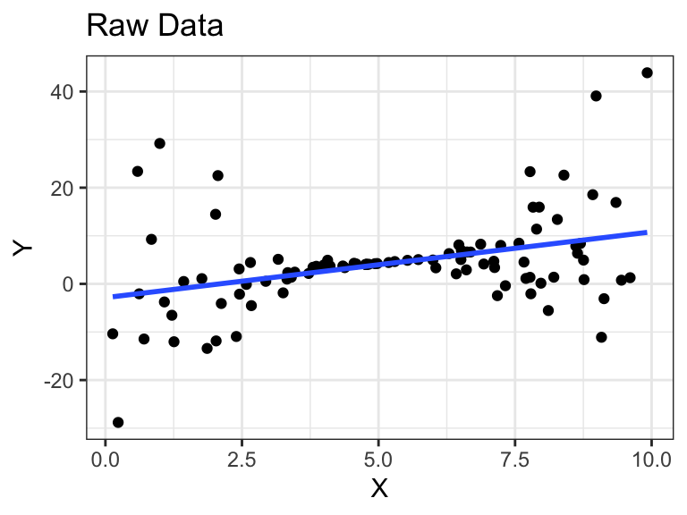
Why is extrapolation bad?
- Not sure if the linear relationship is the same outside the range of the data (because we don’t have data there to see the relationship).
- Not sure if the variability is the same outside the range of the data (because we don’t have data there to see the variability).
To make a prediction:
You need a data frame with the exact same variable name as the explanatory variable.
newdf <- tribble(~estriol, 20, 25)Then you use the
predict()function to obtain predictions.newdf %>% mutate(predictions = predict(object = lmout, newdata = newdf)) -> newdf newdf# A tibble: 2 × 2 estriol predictions <dbl> <dbl> 1 20 33.7 2 25 36.7
Derive the predictions above by hand (not using predict()).
21.523 + 0.608 * 20[1] 33.6821.523 + 0.608 * 25[1] 36.72From the BAC dataset, suppose someone had 5 beers. Use predict() to predict their BAC.
lmbeer <- lm(bac ~ beers, data = bac)
newdata <- tribble(~beers,
5)
predict(object = lmbeer, newdata = newdata) 1
0.07712 Assumptions
Assumptions and Violations
The linear model has many assumptions.
You should always check these assumptions.
Assumptions in decreasing order of importance
- Linearity - The relationship looks like a straight line.
- Independence - The knowledge of the value of one observation does not give you any information on the value of another.
- Equal Variance - The spread is the same for every value of \(x\)
- Normality - The distribution of the errors isn’t too skewed and there aren’t any too extreme points. (Only an issue if you have outliers and a small number of observations because of the central limit theorem).
Problems when violated
- Linearity violated - Linear regression line does not pick up actual relationship. Results aren’t meaningful.
- Independence violated - Linear regression line is unbiased, but standard errors are off. Your \(p\)-values are too small.
- Equal Variance violated - Linear regression line is unbiased, but standard errors are off. Your \(p\)-values may be too small, or too large.
- Normality violated - Unstable results if outliers are present and sample size is small. Not usually a big deal.
What assumptions are made about the distribution of the explanatory variable (the \(x_i\)’s)?
None. Inference is conditional on the \(x_i\)’s.
Evaluating Independence
Think about the problem.
- Were different responses measured on the same observational/experimental unit?
- Were data collected in groups?
Example of non-independence: The temperature today and the temperature tomorrow. If it is warm today, it is probably warm tomorrow.
Example of non-independence: You are collecting a survey. To obtain individuals, you select a house at random and then ask all participants in this house to answer the survey. The participants’ responses inside each house are probably not independent because they probably share similar beliefs/backgrounds/situations/genetics.
Example of independence: You are collecting a survey. To obtain individuals, you randomly dial phone numbers until an individual picks up the phone.
Evaluating other assumptions
Evaluate issues by plotting the residuals.
The residuals are the observed values minus the predicted values. \[ r_i = y_i - \hat{y}_i \]
In the linear model, \(\hat{y}_i = \hat{\beta}_0 + \hat{\beta}_1x_i\).
Obtain the residuals by using
augment()from broom. They will be the.residvariable.aout <- augment(lmout) glimpse(aout)Rows: 31 Columns: 8 $ birthweight <dbl> 25, 25, 25, 27, 27, 27, 24, 30, 30, 31, 30, 31, 30, 28, 32… $ estriol <dbl> 7, 9, 9, 12, 14, 16, 16, 14, 16, 16, 17, 19, 21, 24, 15, 1… $ .fitted <dbl> 25.78, 27.00, 27.00, 28.82, 30.04, 31.25, 31.25, 30.04, 31… $ .resid <dbl> -0.7808, -1.9971, -1.9971, -1.8217, -3.0381, -4.2545, -7.2… $ .hat <dbl> 0.18662, 0.13214, 0.13214, 0.07257, 0.04762, 0.03448, 0.03… $ .sigma <dbl> 3.885, 3.868, 3.868, 3.872, 3.844, 3.802, 3.630, 3.889, 3.… $ .cooksd <dbl> 5.888e-03, 2.396e-02, 2.396e-02, 9.589e-03, 1.659e-02, 2.2… $ .std.resid <dbl> -0.22656, -0.56104, -0.56104, -0.49505, -0.81472, -1.13312…You should always make the following scatterplots. The residuals always go on the \(y\)-axis.
- Fits \(\hat{y}_i\) vs residuals \(r_i\).
- Response \(y_i\) vs residuals \(r_i\).
- Explanatory variable \(x_i\) vs residuals \(r_i\).
In the simple linear model, you can probably evaluate these issues by plotting the data (\(x_i\) vs \(y_i\)). But residual plots generalize to much more complicated models, whereas just plotting the data does not.
Example 1: A perfect residual plot
Warning: `qplot()` was deprecated in ggplot2 3.4.0.

- Means are straight lines
- Residuals seem to be centered at 0 for all \(x\)
- Variance looks equal for all \(x\)
- Everything looks perfect
Example 2: Curved Monotone Relationship, Equal Variances
Generate fake data:
set.seed(1) x <- rexp(100) x <- x - min(x) + 0.5 y <- log(x) * 20 + rnorm(100, sd = 4) df_fake <- tibble(x, y)
`geom_smooth()` using formula = 'y ~ x'

Curved (but always increasing) relationship between \(x\) and \(y\).
Variance looks equal for all \(x\)
Residual plot has a parabolic shape.
Solution: These indicate a \(\log\) transformation of \(x\) could help.
df_fake %>% mutate(logx = log(x)) -> df_fake lm_fake <- lm(y ~ logx, data = df_fake)
Example 3: Curved Non-monotone Relationship, Equal Variances
Generate fake data:
set.seed(1) x <- rnorm(100) y <- -x^2 + rnorm(100) df_fake <- tibble(x, y)
`geom_smooth()` using formula = 'y ~ x'

Curved relationship between \(x\) and \(y\)
Sometimes the relationship is increasing, sometimes it is decreasing.
Variance looks equal for all \(x\)
Residual plot has a parabolic form.
Solution: Include a squared term in the model (or hire a statistician).
lmout <- lm(y ~ x^2, data = df_fake)
Example 4: Curved Relationship, Variance Increases with \(Y\)
Generate fake data:
set.seed(1) x <- rnorm(100) y <- exp(x + rnorm(100, sd = 1/2)) df_fake <- tibble(x, y)
`geom_smooth()` using formula = 'y ~ x'

Curved relationship between \(x\) and \(y\)
Variance looks like it increases as \(y\) increases
Residual plot has a parabolic form.
Residual plot variance looks larger to the right and smaller to the left.
Solution: Take a log-transformation of \(y\).
df_fake %>% mutate(logy = log(y)) -> df_fake lm_fake <- lm(logy ~ x, data = df_fake)
Example 5: Linear Relationship, Equal Variances, Skewed Distribution
`geom_smooth()` using formula = 'y ~ x'

- Straight line relationship between \(x\) and \(y\).
- Variances about equal for all \(x\)
- Skew for all \(x\)
- Residual plots show skew.
- Solution: Do nothing, but report skew (usually OK to do)
Example 6: Linear Relationship, Unequal Variances
Generate fake data:
set.seed(1) x <- runif(100) * 10 y <- 0.85 * x + rnorm(100, sd = (x - 5) ^ 2) df_fake <- tibble(x, y)
`geom_smooth()` using formula = 'y ~ x'

Linear relationship between \(x\) and \(y\).
Variance is different for different values of \(x\).
Residual plots really good at showing this.
Solution: The modern solution is to use sandwich estimates of the standard errors (hire a statistician).
library(sandwich) lm_fake <- lm(y ~ x, data = df_fake) semat <- sandwich(lm_fake) tidy(lm_fake) %>% mutate(sandwich_se = sqrt(diag(semat)), sandwich_t = estimate / sandwich_se, sandwich_p = 2 * pt(-abs(sandwich_t), df = df.residual(lm_fake)))# A tibble: 2 × 8 term estimate std.error statistic p.value sandwich_se sandwich_t sandwich_p <chr> <dbl> <dbl> <dbl> <dbl> <dbl> <dbl> <dbl> 1 (Inter… -2.86 2.01 -1.43 1.57e-1 2.78 -1.03 0.307 2 x 1.37 0.345 3.97 1.37e-4 0.508 2.70 0.00827
Some Exercises on Assumptions
Evaluate the assumptions of the linear fit of birthweight on estriol.
Looks good. No curvilinear trends, equal variance looks fine.
ggplot(estriol, aes(x = estriol, y = birthweight)) +
geom_point() +
geom_smooth(method = "lm", formula = y ~ x, se = FALSE)
lm(birthweight ~ estriol, data = estriol) |>
augment() |>
ggplot(aes(x = .fitted, y = .resid)) +
geom_point() +
geom_hline(yintercept = 0, lty = 2) +
geom_smooth(formula = y ~ x, method = "loess")
Evaluate the assumptions of the linear fit of blood alcohol level on beers.
Looks good. No curvilinear trends, equal variance looks fine.
ggplot(bac, aes(x = beers, y = bac)) +
geom_point() +
geom_smooth(method = "lm", formula = y ~ x, se = FALSE)
lm(bac ~ beers, data = bac) |>
augment() |>
ggplot(aes(x = .fitted, y = .resid)) +
geom_point() +
geom_hline(yintercept = 0, lty = 2) +
geom_smooth(formula = y ~ x, method = "loess")
Evaluate the assumptions of the linear fit of fev level on height.
It looks very curved, doesn’t it? But the equal variance assumption looks fine.
ggplot(fev, aes(x = height, y = fev)) +
geom_point() +
geom_smooth(method = "lm", formula = y ~ x, se = FALSE)
lm(fev ~ height, data = fev) |>
augment() |>
ggplot(aes(x = .fitted, y = .resid)) +
geom_point() +
geom_hline(yintercept = 0, lty = 2) +
geom_smooth(formula = y ~ x, method = "loess")
Logging height doesn’t do anything, so we could add a quadratic trend
ggplot(fev, aes(x = height, y = fev)) +
geom_point() +
geom_smooth(method = "lm", formula = y ~ x + I(x^2), se = FALSE)
lm(fev ~ height + I(height^2), data = fev) |>
augment() |>
ggplot(aes(x = .fitted, y = .resid)) +
geom_point() +
geom_hline(yintercept = 0, lty = 2) +
geom_smooth(formula = y ~ x, method = "loess")
This looks way better. The squared-height term is significant:
lm(fev ~ height + I(height^2), data = fev) |>
tidy()# A tibble: 3 × 5
term estimate std.error statistic p.value
<chr> <dbl> <dbl> <dbl> <dbl>
1 (Intercept) 7.77 2.93 2.65 0.0265
2 height -0.118 0.0378 -3.12 0.0124
3 I(height^2) 0.000542 0.000121 4.48 0.00154The following data frame, from Wilson (1999), contains the numbers of reptile and amphibian species and the island areas for seven islands in the West Indies.
species <- tribble(
~Area, ~Species,
44218, 100,
29371, 108,
4244, 45,
3435, 53,
32, 16,
5, 11,
1, 7)Find an appropriate linear regression model for relating the effect of island area on species number. Find the regression estimates. Interpret them.
Plotting the data, it looks like we need to take logs:
Fit the linear model:
species %>%
mutate(log_area = log2(Area),
log_species = log2(Species)) ->
species
lm_sp <- lm(log_species ~ log_area, data = species)
tidy(lm_sp)# A tibble: 2 × 5
term estimate std.error statistic p.value
<chr> <dbl> <dbl> <dbl> <dbl>
1 (Intercept) 2.79 0.127 22.0 0.00000362
2 log_area 0.250 0.0121 20.6 0.00000496Islands with twice the area have 2^0.25 times as many species on average.
Interpreting Coefficients when you use logs
Generally, when you use logs, you interpret associations on a multiplicative scale instead of an additive scale.
No log:
- Model: \(E[y_i] = \beta_0 + \beta_1 x_i\)
- Observations that differ by 1 unit in \(x\) tend to differ by \(\beta_1\) units in \(y\).
Log \(x\):
- Model: \(E[y_i] = \beta_0 + \beta_1 \log_2(x_i)\)
- Observations that are twice as large in \(x\) tend to differ by \(\beta_1\) units in \(y\).
Log \(y\):
- Model: \(E[\log_2(y_i)] = \beta_0 + \beta_1 x_i\)
- Observations that differ by 1 unit in \(x\) tend to be \(2^{\beta_1}\) times larger in \(y\).
Log both:
- Model: \(E[\log_2(y_i)] = \beta_0 + \beta_1 \log_2(x_i)\)
- Observations that are twice as large in \(x\) tend to be \(2^{\beta_1}\) times larger in \(y\).
Re-interpret the regression coefficients estimates you calculated using the species dataset.
2^0.25 = 1.19, so:
Islands that are twice as large tend to have 19% more species on average.
Multiple Linear Regression
In Progress
Summary of R commands
augment():- Residuals \(r_i = y_i - \hat{y}_i\):
$.resid - Fitted Values \(\hat{y}_i\):
$.fitted
- Residuals \(r_i = y_i - \hat{y}_i\):
tidy():- Name of variables:
$term - Coefficient Estimates:
$estimate - Standard Error (standard deviation of sampling distribution of coefficient estimates):
$std.error - t-statistic:
$statistic - p-value:
$p.value
- Name of variables:
glance():- R-squared value (proportion of variance explained by regression line, higher is better):
$r.squared - AIC (lower is better):
$AIC - BIC (lower is better):
$BIC
- R-squared value (proportion of variance explained by regression line, higher is better):
References
Graham, Petra L, William I Notz, Dennis K Pearl, and Elizabeth A Stasny. 2003. “Electronic Resources: The Ohio State University EESEE Project.” Journal of Applied Mathematics and Decision Sciences 7 (2): 85–92. https://doi.org/10.1207/S15327612JAMD0702_4.
Greene Jr, John W, and Joseph C Touchstone. 1963. “Urinary Estriol as an Index of Placental Function. A Study of 279 Cases.” American Journal of Obstetrics and Gynecology 85: 1–9. https://doi.org/10.1016/S0002-9378(16)35333-9.
Wilson, Edward O. 1999. The Diversity of Life. WW Norton & Company.